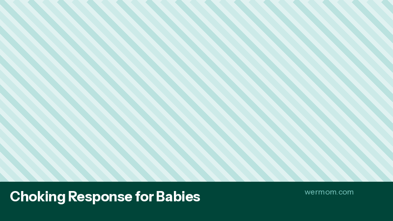

Infant CPR: The Skill That Saves Lives
Let's explore what science tells us about infant cpr: the skill that saves lives. This involves understanding unresponsive infant protocol, compression technique, rescue breaths, aed use, when to call 911 vs. start cpr..
Starting with unresponsive infant protocol: this is where many parents begin their learning journey. Evidence from clinical studies shows that early awareness of these factors can make a meaningful difference in outcomes. Healthcare providers often recommend that parents familiarize themselves with these fundamentals during the prenatal period.
Equally important is compression technique. Combined with rescue breaths, these factors create a comprehensive picture that helps parents make informed decisions. What many parents don't realize is that these elements are deeply interconnected — a change in one area often influences others in ways that aren't immediately obvious.
What does this look like day-to-day? For most families, it means being intentional about monitoring baby first aid and noting any changes from what's typical for your child. You don't need to be obsessive about it — just consistent. A few quick notes each day can paint a powerful picture over time.
This is exactly where having the right tools makes a difference. Tracking baby first aid doesn't have to be complicated — with a dedicated app like Wermom, you can log observations in seconds and let the patterns emerge naturally. The app's personalized insights adapt to your child's unique data, helping you stay one step ahead.
Choking Response for Babies
Experts in expert guides emphasize the importance of understanding choking response for babies. This encompasses back blows technique, chest thrusts, clearing visible objects, what not to do (no blind finger sweep)..
Starting with back blows technique: this is where many parents begin their learning journey. Evidence from clinical studies shows that early awareness of these factors can make a meaningful difference in outcomes. Healthcare providers often recommend that parents familiarize themselves with these fundamentals during the prenatal period.
Another crucial factor involves chest thrusts. This works in tandem with clearing visible objects to give parents the full picture. Many experienced pediatricians note that parents who understand both of these concepts tend to identify potential issues earlier.
What does this look like day-to-day? For most families, it means being intentional about monitoring baby first aid and noting any changes from what's typical for your child. You don't need to be obsessive about it — just consistent. A few quick notes each day can paint a powerful picture over time.
The good news is that modern parenting tools have made it easier than ever to stay on top of baby first aid. Wermom's tracking features were built with exactly this scenario in mind, helping parents move from guesswork to confidence through personalized, data-driven insights.

Managing Common Injuries
One of the most common questions parents ask involves managing common injuries. Here's what the evidence shows: Bumps and bruises, minor cuts, nosebleeds, burns (cool water, no ice), when stitches are needed.
Starting with bumps and bruises: this is where many parents begin their learning journey. Evidence from clinical studies shows that early awareness of these factors can make a meaningful difference in outcomes. Healthcare providers often recommend that parents familiarize themselves with these fundamentals during the prenatal period.
Equally important is minor cuts. Combined with nosebleeds, these factors create a comprehensive picture that helps parents make informed decisions. What many parents don't realize is that these elements are deeply interconnected — a change in one area often influences others in ways that aren't immediately obvious.
From a practical standpoint, here's what this means for your daily routine: start by observing patterns related to baby first aid. Keep notes, even brief ones, about what you notice each day. Over time, these observations build into a valuable record that helps both you and your healthcare provider understand your child's unique patterns and needs.
The good news is that modern parenting tools have made it easier than ever to stay on top of baby first aid. Wermom's tracking features were built with exactly this scenario in mind, helping parents move from guesswork to confidence through personalized, data-driven insights.
Building Your Baby First Aid Kit
As your journey into expert guides continues, building your baby first aid kit becomes increasingly relevant. Essential supplies checklist, medication dosing chart, emergency numbers, pediatrician after-hours line.
Starting with essential supplies checklist: this is where many parents begin their learning journey. Evidence from clinical studies shows that early awareness of these factors can make a meaningful difference in outcomes. Healthcare providers often recommend that parents familiarize themselves with these fundamentals during the prenatal period.
Another crucial factor involves medication dosing chart. This works in tandem with emergency numbers to give parents the full picture. Many experienced pediatricians note that parents who understand both of these concepts tend to identify potential issues earlier.
What does this look like day-to-day? For most families, it means being intentional about monitoring baby first aid and noting any changes from what's typical for your child. You don't need to be obsessive about it — just consistent. A few quick notes each day can paint a powerful picture over time.
This is exactly where having the right tools makes a difference. Tracking baby first aid doesn't have to be complicated — with a dedicated app like Wermom, you can log observations in seconds and let the patterns emerge naturally. The app's personalized insights adapt to your child's unique data, helping you stay one step ahead.
Recording Medical Incidents for Your Pediatrician
Experts in expert guides emphasize the importance of understanding recording medical incidents for your pediatrician. This encompasses how documenting injuries, allergic reactions, and medical events builds a complete health record..
The first thing to understand is how documenting injuries. This forms the foundation for everything else in this area. Pediatric researchers have found that parents who understand this concept early on tend to feel more confident in their caregiving decisions and are better equipped to notice when something needs attention.
Another crucial factor involves allergic reactions. This works in tandem with and medical events builds a complete health record. to give parents the full picture. Many experienced pediatricians note that parents who understand both of these concepts tend to identify potential issues earlier.
What does this look like day-to-day? For most families, it means being intentional about monitoring baby first aid and noting any changes from what's typical for your child. You don't need to be obsessive about it — just consistent. A few quick notes each day can paint a powerful picture over time.
This is exactly where having the right tools makes a difference. Tracking baby first aid doesn't have to be complicated — with a dedicated app like Wermom, you can log observations in seconds and let the patterns emerge naturally. The app's personalized insights adapt to your child's unique data, helping you stay one step ahead.
Start Tracking with Wermom Today
Join thousands of parents using medical incident documentation to give their babies the best start. Personalized insights, milestone tracking, and expert guidance — all in one app.
Get Wermom Free